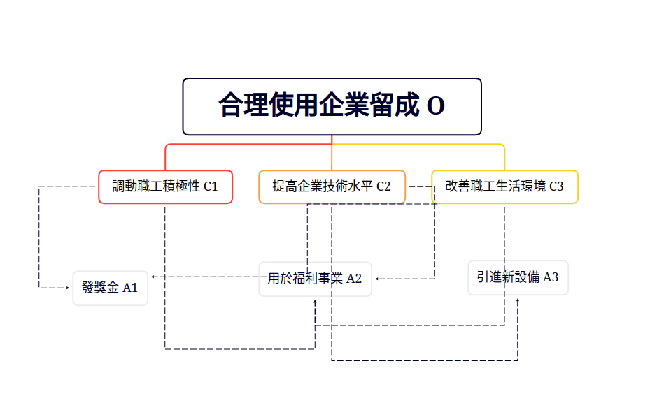

關於層次分析法（AHP）的研究
序
層次分析法（The Analytic Hierarchy Process, AHP)是由美國運籌學家、匹茲堡大學教授T . L. Saaty於20世紀70年代創立的一種系統分析與決策的綜合評價方法，是在充分研究了人類思維過程的基礎上提出來的，它較合理地解決了定性問題定量化的處理過程。
AHP的主要特點是通過建立遞階層次結構，把人類的判斷轉化到若幹因素兩兩之間重要度的比較上，從而把難於量化的定性判斷轉化為可操作的重要度的比較上面。在許多情況下，決策者可以直接使用AHP進行決策，極大地提高了決策的有效性、可靠性和可行性，但其本質是一種思維方式，它把復雜問題分解成多個組成因素，又將這些因素按支配關系分別形成遞階層次結構，通過兩兩比較的方法確定決策方案相對重要度的總排序。整個過程體現了人類決策思維的基本特征，即分解、判斷、綜合，克服了其他方法回避決策者主觀判斷的缺點。
一、基本思路
- 根據各因素之間的關係建立系統層次結構（論文中包含層次結構圖）。
- 同一層次中各元素關於上一層次的某一準則進行兩兩比較，構造判斷矩陣。
- 一致性檢驗。
- 計算相對權重。
- 算術平均法
- 幾何平均法
- 特徵值法
- 得出結論
二、使用例
例題
有家企業年末由留成，希望將此筆資金用於以下幾個領域：發獎金、福利事業與引進新設備。但是在利用企業留成時需要考慮以下幾個方面：調動職工積極性、提高企業技術水平和改善職工生活條件。請建立數學模型合理使用企業留成，幫助企業將來更好地發展。
1. 根據材料提出以下問題，並建立層次結構模型。
- 評價目標是什麼？（目標層）
- 評價準則是什麼？（準則層）
- 有哪些可選方案？（方案層）

2. 構建判斷矩陣
採用一致矩陣法，將不同因素兩兩相互比較，建立多個矩陣；次過程中採用相對標度，以提高精確度。| 標度 | 含義 |
|---|---|
| 1 | 表示兩個因素相比，具有同樣重要性。 |
| 3 | 表示兩個因素相比，一個因素比另一個因素稍微重要。 |
| 5 | 表示兩個因素相比，一個因素比另一個因素明顯重要。 |
| 7 | 表示兩個因素相比，一個因素比另一個因素強烈重要。 |
| 9 | 表示兩個因素相比，一個因素比另一個因素極端重要。 |
| 2,4,6,8 | 上述兩相鄰判斷的中值。 |
| 倒數 | 因素i與j比較的判斷\( a_{ij} \)，則因素j與i比較的判斷\( a_{ji} = \frac{1}{a_{ij}} \) |
初步構建的判斷矩陣如下。
$$
M_{OC}=
\begin{bmatrix}
1& \frac{1}{5} & \frac{1}{3}\\
5& 1& 3\\
3& \frac{1}{3}& 1
\end{bmatrix} \\
M_{C_{1}A}=
\begin{bmatrix}
1& 3\\
\frac{1}{3}& 1
\end{bmatrix} \\
M_{C_{2}A}=
\begin{bmatrix}
1& \frac{1}{5}\\
5& 1
\end{bmatrix} \\
M_{C_{3}A}=
\begin{bmatrix}
1& 2\\
\frac{1}{2}& 1
\end{bmatrix}
$$
若矩陣中每個元素\( a_{ij}>0 \)且滿足\( a_{ij}\times a_{ji} = 1 \)，則我們稱該矩陣爲正互反矩陣；層次分析法中所構建的判斷矩陣都是正互反矩陣。若正互反矩陣滿足\( a_{ij} \times a_{jk} = a_{ik} \)，則我們稱其爲一致矩陣。
即\( \begin{bmatrix} a_{11} & a_{12} & \cdots & a_{1n} \\ a_{21} & a_{22} & \cdots & a_{2n} \\ \vdots & \vdots & \ddots & \vdots \\ a_{n1} & a_{n2} & \cdots & a_{nn} \end{bmatrix} \)爲一致矩陣\( \Leftrightarrow \left\{\begin{matrix} a_{ij} > 0 \\ a_{11} = a_{22} = \cdots = a_{nn} = 1 \\ \left [ a_{i1},a_{i2}, \cdots ,a_{in} \right ] = k_{i} \left [ a_{11},a_{12}, \cdots , a_{1n} \right ] \end{matrix}\right. \)
引理：\( A \)爲n階方陣，且\( r \left ( A \right )=1 \)，則\( A \)又一個特徵值爲\( tr \left ( A \right ) \)，其餘特徵值均爲0。因爲一致矩陣的各行成比例且不是零矩陣，所以一致矩陣的秩一定爲1。 由引理可知：一致矩陣又一個特徵值爲n，其餘特徵值均爲0。另易得，特徵值爲n時，對應的特徵向量剛好爲\( k \left [ \frac{1}{a_{11}} , \frac{1}{a_{12}} , \cdots , \frac{1}{a_{1n}} \right ] ^{T} \left ( k \ne 0 \right ) \)
故，ｎ階正互反矩陣Ａ爲一致矩陣，當且僅當最大特徵值\( \lambda _{max} \)等於ｎ，且當正互反矩陣Ａ非一致時，一定滿足\( \lambda _{max} \)大於ｎ。
且易證，矩陣越不一致，最大特徵值與ｎ相差越大。
爲檢測已構建矩陣的一致性，需要進行一致性檢驗。
3. 一致性检验
由公式\( CI = \frac{\lambda _{max} - n}{n - 1} \)計算一致性指標\( CI \)，並查找對應的平均隨機一致性指標\( RI \)。（此處需注意，如特徵值中存在虛數，則使用其絕對值；且當n大於10，可考慮建立二級指標體系，或使用模糊綜合評價模型。）| \( n \) | 1 | 2 | 3 | 4 | 5 | 6 | 7 | 8 | 9 | 10 | 11 |
|---|---|---|---|---|---|---|---|---|---|---|---|
| \( RI \) | 0 | 0 | 0.52 | 0.89 | 1.12 | 1.26 | 1.36 | 1.41 | 1.46 | 1.49 | 1.52 |
利用如下公式計算一致性比例( CR )。
$$CR = \frac{CI}{RI} $$
進行比較，若\( CR \)小於0.1，則認爲該矩陣的一致性可接受，否則就要對該矩陣進行修正。
4. 計算判斷矩陣的權重
計算方法有三：算術平均法、幾何平均法、特徵值法。- 算術平均法
- 將判斷矩陣按照列歸一化
- 將歸一化的矩陣按列求和
- 將求和後的向量的每個元素除以n即可得到權重向量。
假設判斷矩陣
$$ A = \begin{bmatrix}
a_{11} & a_{12} & \cdots & a_{1n} \\
a_{21} & a_{22} & \cdots & a_{2n} \\
\vdots & \vdots & \ddots & \vdots \\
a_{n1} & a_{n2} & \cdots & a_{nn}
\end{bmatrix} $$
那麼算術平均法求得的權重向量的元素\( \omega _{i} = \frac{1}{n}\sum_{j=1}^{n} \frac{a_{ij}}{ \sum_{k=1}^{n} a_{kj} } \space \space \left ( i = 1,2, \cdots, n \right )\)
以此矩陣爲例：
$$
M_{OC}=
\begin{bmatrix}
1& \frac{1}{5} & \frac{1}{3}\\
5& 1& 3\\
3& \frac{1}{3}& 1
\end{bmatrix}
$$
首先將所有列進行歸一處理，例如第一列：
$$ C_{1} = \frac{1}{1+5+3} \\
C_{2} = \frac{5}{1+5+3} \\
C_{3} = \frac{3}{1+5+3}
$$
將所有列如此操作後得到以下矩陣：
$$ \begin{bmatrix}
0.111111 & 0.130435 & 0.076923 \\
0.555556 & 0.652174 & 0.692308 \\
0.333333 & 0.217391 & 0.230769
\end{bmatrix}
$$
將該矩陣按行計算算術平均值，得到權重向量：
$$\begin{bmatrix}
0.1062 \\
0.6333 \\
0.2605
\end{bmatrix}
$$
Octave代碼如下：
% 假設M爲目標矩陣
[n,n] = size(M); % M爲n*n的方陣，求出n
sumM = sum(M); % 按列求和
sumMat = repmat(sumA,n,1); % 將求和所得的向量重複成矩陣
stdA = M ./ sumMat; % 歸一化
sum(stdA,2) ./ n % 計算算術平均數
- 幾何平均法
基本思路與算術平均法類似，僅僅將算術平均數替代以幾何平均數。
以該算法得到的權重向量爲：
$$
\begin{bmatrix}
0.1047 \\
0.6370 \\
0.2583
\end{bmatrix}
$$
Octave代碼如下：
% 假設M爲目標矩陣
[n,n] = size(M); % M爲n*n的方陣，求出n
prodM = prod(A,2); % 按行求積
prodn_M = prodM .^ (1/n); % 開方
prodn_M ./ sum(prodn_M) % 歸一化得到權重向量
- 特徵值法
一致矩陣又一個特徵值爲n，其餘特徵值爲0，且當特徵值爲n時，特徵向量爲
$$k \left [ \frac{1}{a_{11}} , \frac{1}{a_{12}} , \cdots , \frac{1}{a_{1n}} \right ] ^{T} \left ( k \ne 0 \right )$$
根據一致矩陣的定義，該特徵向量剛好是一致矩陣的第一列。因此，在判斷矩陣通過一致性檢驗的前提下，便可以仿照平均權重的解法進行特徵值法求權重。先求出矩陣的最大特徵值與與其對應的特徵向量，再將該特徵向量歸一化即可得到權重。 使用Octave計算得權重矩陣爲：
$$
\begin{bmatrix}
0.1047 \\
0.6370 \\
0.2583
\end{bmatrix}
$$
Octave代碼爲：
[V,D] = eig(A); % 求特徵向量（V）與特徵值對角矩陣
maxEig = max(max(D)); % 找到最大特徵值
[r,c]=find(D == maxEig , 1); % 找到最大特徵值（唯一）所在的位置
V(:,c) ./ sum(V(:,c)) % 歸一化得到權重向量
5. 計算最終排序
將按照以上步驟計算得各權重向量填入如下表格：| \( O \) | 權重 | \( A_{1} \) | \( A_{2} \) | \( A_{3} \) |
|---|---|---|---|---|
| \( C_{1} \) | \( 0.1047 \) | \( 0.7500 \) | \( 0.2500 \) | \( 0 \) |
| \( C_{2} \) | \( 0.6370 \) | \( 0 \) | \( 0.1667 \) | \( 0.8333 \) |
| \( C_{3} \) | \( 0.2583 \) | \( 0.6667 \) | \( 0.3333 \) | \( 0 \) |
據此，最終的排序向量爲：
$$
\mathbf{W} =
\begin{bmatrix}
0.7500 & 0 & 0.6667 \\
0.2500 & 0.1667 & 0.3333 \\
0 & 0.8333 & 0
\end{bmatrix}
\begin{bmatrix}
0.1047 \\
0.6370 \\
0.2583
\end{bmatrix}
=
\begin{bmatrix}
0.2507 \\
0.2185 \\
0.5308
\end{bmatrix}
$$
6. 結論
資金分配比例應爲：用於發獎金佔25.07%，用於改善福利事業占21.85%，用於引進新設備佔53.08%。fin、結
層次分析法是一種解決多目標的復雜問題的定性與定量相結合的決策分析方法。該方法將定量分析與定性分析結合起來，用決策者的經驗判斷各衡量目標之間能否實現的標準之間的相對重要程度，並合理地給出每個決策方案的每個標準的權數，利用權數求出各方案的優劣次序，比較有效地應用於那些難以用定量方法解決的課題。
- 處理問題類型：決策、評價、分析、預測等。
- 建立層次分析結構模型是關鍵一步，要有主要決策層參與。
- 構造成對比較矩陣是數量依據，應由經驗豐富、判斷力強的專家給出。
Jun ASAKA
二〇二二年九月廿九 木曜日